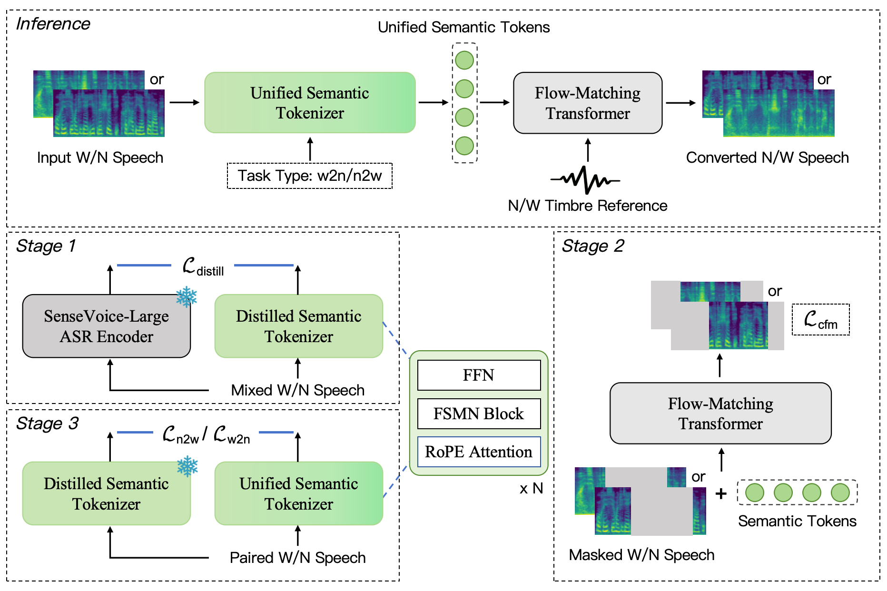
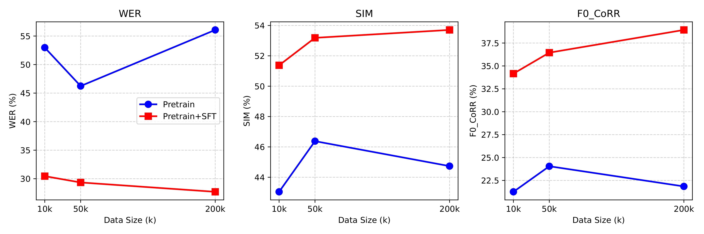

Whispered speech lacks fundamental frequency due to the missing vibration of the vocal fold and periodic excitation, leading to degraded acoustic cues. This makes it challenging to recover timbre-preserved natural speech from whispered speech. Existing Whisper-to-Normal (W2N) methods rely heavily on parallel data, while such data are extremely scarce. Semantic representations perform strongly in the Text-to-Speech area. We observe that despite large acoustic discrepancies between whispered and normal speech, their high semantic similarity allows mutual conversion between them. Motivated by this, we propose WhispEar, a bidirectional framework supporting W2N and N2W tasks. The N2W module allows generating high-quality pseudo-whisper data using large-scale speech datasets. Experiments show that WhispEar significantly outperforms baselines. In addition, we release wEar, which is the largest bilingual dataset(ZH-EN) in this field to date. Its effectiveness is further validated through ablation experiments.
WhispEar is a scalable bidirectional whispered speech conversion framework. It supports high-quality whisper-to-normal and normal-to-whisper conversion in both English and Chinese. By learning unified semantic representations shared across speaking modes, WhispEar achieves stable zero-shot conversion and enables large-scale pseudo-parallel data generation. The system is designed not only for high-quality voice reconstruction, but also for studying scalability in whispered speech modeling.

In this section, we present zero-shot whisper-to-normal (W2N) conversion results on unseen English speakers. Given whispered input without pitch information, WhispEar reconstructs natural-sounding normal speech with stable prosody and improved intelligibility. Even under limited paired training data, the model maintains consistent performance, demonstrating strong robustness and generalization.
| Whispered Input | Normal GT | Reference Text | WESPER | MaskCycleGAN | CosyVoice2 | WhispEar(Ours) |
|---|---|---|---|---|---|---|
| A lawyer was appointed to execute her will. | ||||||
| Eat your raisins outdoors on the porch steps. | ||||||
| Are your grades higher or lower than Nancy's? |
We further evaluate zero-shot W2N conversion on Mandarin Chinese. Whispered Mandarin poses additional challenges due to tonal information loss. Despite missing pitch cues, WhispEar successfully restores natural tonal contours and preserves linguistic content. The results show that our unified semantic modeling effectively generalizes across languages and speaking modes.
| Whispered Input | Normal GT | Reference Text | WESPER | MaskCycleGAN | CosyVoice2 | WhispEar(Ours) |
|---|---|---|---|---|---|---|
| 今天的天气特别晴朗，我想去河边散步。 | ||||||
| 周末的时间总是过得很快，感觉刚开始就结束了。 | ||||||
| 请问从这里走到公园需要多长时间？ |
WhispEar also supports zero-shot normal-to-whisper (N2W) synthesis. Given normal English speech, the model generates realistic whispered speech while preserving speaker characteristics and linguistic content. This direction is crucial for scalable pseudo-parallel data generation, enabling the creation of large whispered datasets without manual recording.
| Normal Input | Whispered GT | Reference Text | Normal2Whisper1 | WhispEar(Ours) |
|---|---|---|---|---|
| This was easy for us. | ||||
| Jane may earn more money by working hard. | ||||
| Nothing is as offensive as innocence. |
We additionally demonstrate zero-shot N2W conversion in Mandarin Chinese. The generated whispered speech exhibits stable articulation and natural spectral characteristics, closely matching real whispered recordings. These results confirm that the learned semantic representation remains consistent across languages and supports high-quality bidirectional conversion.
| Normal Input | Whispered GT | Reference Text | Normal2Whisper1 | WhispEar(Ours) |
|---|---|---|---|---|
| 你今天有没有试过新开的那家餐厅？ | ||||
| 这个景点每年都有很多游客，我们最好早点去。 | ||||
| 我很想知道接下来的剧情会如何发展。 |
We release wEar, the largest and most diverse bilingual whispered-normal parallel dataset to date, covering both English and Chinese. Beyond dataset release, we conduct systematic scalability experiments by leveraging large-scale pseudo-parallel data generated via our N2W pipeline. The results show clear performance gains as training data scales, validating WhispEar’s ability to effectively utilize synthetic whispered data and highlighting a practical pathway for scaling whispered speech conversion.
| Dataset | Language(s) | Total Duration (h) | Pairs | Speakers |
|---|---|---|---|---|
| Others | ||||
| wTIMIT | EN | 26 | 19k | 48 |
| CHAINs | EN | 3 | 1k | 36 |
| iWhisper | CN | 15 | -- | 80 |
| wSPIRE | EN | 18 | -- | 88 |
| AISHELL6 | CN | 30 | 20k | 167 |
| Whisper40 | CN | 6 | 1k | 36 |
| Ours | ||||
| wEar (Real) | CN | 18 | 4k | 146 |
| wEar (Pseudo) | EN,CN | 3026 | 600k | 230 |
| wEar (Total) | EN,CN | 3044 | 604k | 230 |

1. Normal2Whisper: https://github.com/chaufanglin/Normal2Whisper